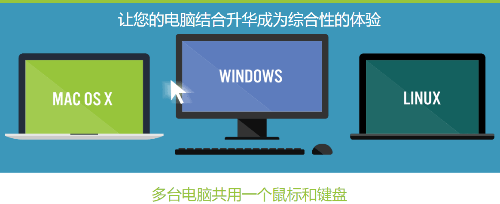
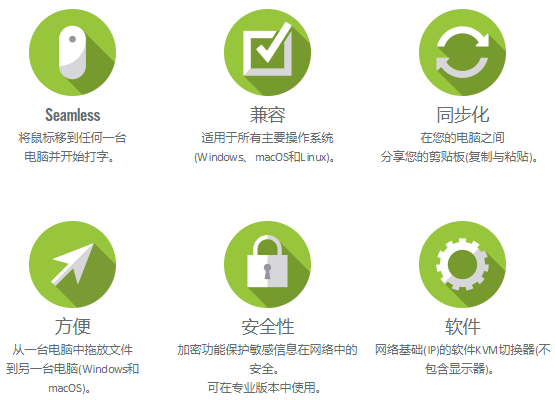
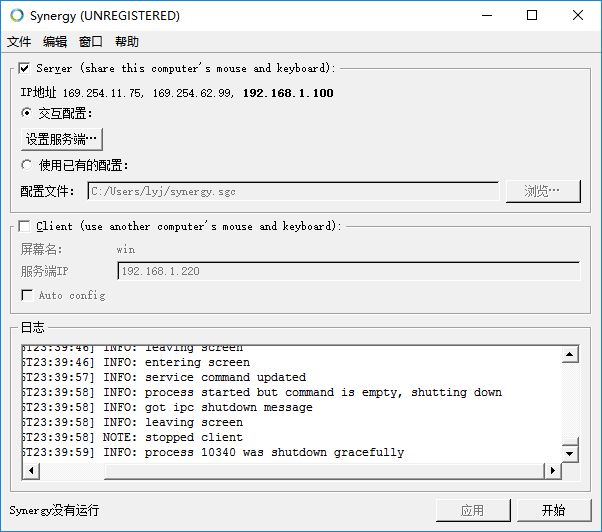
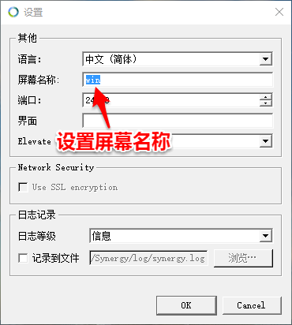
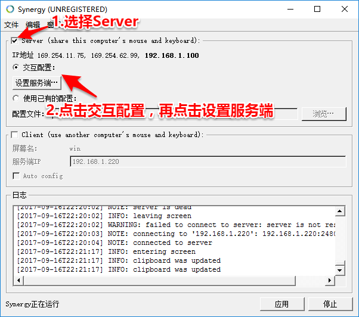
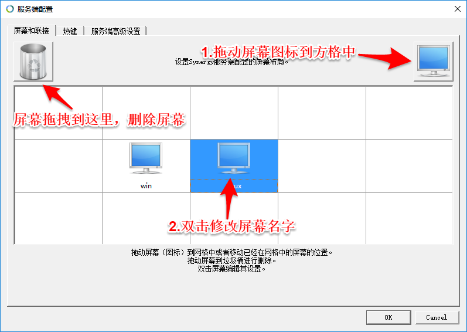
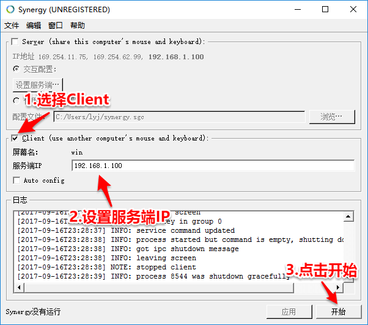

Synergy 是我用的，目前为止支持平台最多的、使用最方便、最稳定的鼠标与键盘共享软件。我还使用过只支持windows平台的Mouse without Borders键鼠共享软件,这是微软出品的只支持windows平台，如果你只想在windows电脑之间共享键鼠，不防使用它。同时我还用过其它的，但已不记得名字了。总的来说，Synergy除却后面提到的版本难找的缺点，它是这一类软件中最好的。

有了Synergy，从理论上来说，你可以用一套鼠标与键盘，同时控制多台电脑（理论上是最多15台）。同时它还支持剪贴板共享。也就是说你可以在不同的电脑之间，无逢地复制粘贴文字，这大大提高了工作效率。甚至它还支持鼠标拖拽来传送文件,但这个功能只支持windows与mac之间的传送。其具体功能支持如下图。

1. 下载
Synergy在官网下载时，需要付费。土豪可以直接购买下载，毕竟开发者开发也不容易，并且购买的版本支持的功能更多，像什么加密等，Synergy如果从国内的下载站中去下载，要么是平台版本不全，如只有windows版，没有linux版或Mac版的；要么就是要Synergy的版号不同，而这可能造成键鼠无法共享。
笔者经过千辛万苦帮大家找到了最新版的包含全平台的Synergy的下载地址，但由于头条不支持在文章中写外部网站的地址，请大家访问我的网站iwifigame点com，里面有Synergy最新最全的下载。如果大家觉得作者找软件，写文章辛苦了，也可以在该网站中，小小地打赏一下。
打开笔者提供的下载地址，里面包括1.7.6到最新版的1.8.8。我们打开1.8.8文件夹，选择和你操作系统以及位数相对应的版本即可。windows版本中名字有x86的表示是32位系统，x64表示64位操作系统。在linux版本中，有deb和rpm两种安装包，你首先需要确认你的系统支持哪种安装包；同时linux安装包名中的i686表示32位系统，x86_64表示64位操作系统。
2. 安装
下载后的Windows与Mac版本的，直接双击即可安装，非常方便。
下面简单介绍下Linux版本中ubuntu的安装。下载Synergy正确的文件后（注意要下载和自己linux系统相对应的版本，有deb rpm 还有32位与64位之分），我下载的是32位的deb包，名字是synergy-v1.8.8-stable-Linux-i686.deb。下载完成后，使用终端跳转到下载文件夹，执行下面的命令，即完成安装。
3. 使用
Synergy 的使用，要明确服务端与客户端这两个概念了。当电脑运行Synergy时，可以选择是当服务端还是客户端。如果选择当服务端则表示本电脑的鼠标与键盘将共享给所有连接的客户端使用。选择客户端则表示与服务端连接后，可以使用服务端的鼠标与键盘，客户端本地的键鼠则只能自己使用。
下面我以我电脑中的windows电脑为服务端，linux电脑为客户端为例，详细说明配置与使用的过程。
Synergy的主界面如下。它的使用步骤如下。

基本设置，只需设置电脑屏幕的名称（这里非常重要）。在之后的使用中，都需要这个电脑屏幕名称。
具体设置方法如下。选择主界面上编辑菜单中的设置，在弹出的设置窗口中，修改屏幕名称即可。注意，每台电脑的屏幕名称要不一样。如下，我把我的Windows电脑的屏幕名设为win。linux电脑中也同样这样设置为linux。至此，服务端与客户端的电脑屏幕名称就都设置好了，分别为win与linux。
设置服务端。
选中主界面上的Server方框，然后选择交互配置，再点击设置服务端按钮。

弹出如下对话框。

对话框中有15个方格，表示每个方格中可以拖拽放入一块屏幕（第一步中设置的），因此最多支持15台电脑共享一套键鼠。从右上角拖拽显示器模样的图标到方格中，即可添加屏幕；把屏幕拖到左上角的垃圾箱图标即可删除屏幕。双击拖拽添加好的屏幕，将添加的屏幕名设置为第1步中指定的屏幕名称。
我这里由于有两台电脑要相互连接，因此，添加两块屏幕，名称分别为win与linux。注意，这些屏幕的的相对位置最好对应现实中屏幕的位置。因为我的windows电脑在linux电脑的左边，因此名为win的屏幕放在名为linux的左边，这样才可以无逢切换鼠标。其它上下左右的设置也是这个道理。
在这里同时要记下服务端的IP地址，它的值为Server下中的IP地址指定的加粗的部分，这里为192.168.1.100。客户端在配置连接时，需要用到这个服务端ip地址。设置客户端。选中主界面上的Client方框，然后在服务端IP中输入第二步中服务端的IP地址192.168.1.100。如下图。
启动服务端与客户端。分别点击服务端与客户端主界面上右下角的开始按钮即可。然后就可以在电脑间共享鼠标与键盘了，祝大家使用愉快。